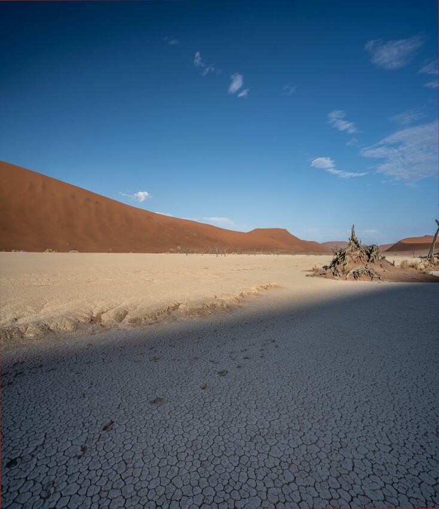

Выращиваем клубнику на балконе и подоконнике: секреты хорошего урожая
Какой сорт выбрать
Лучше для выращивания этой ягоды подходит застекленный балкон, обращенный на южную сторону. Именно там достаточно света, чтобы растение чувствовало себя комфортно. В ином случае придется позаботиться о дополнительном освещении. Для этого подойдут светодиодные и фитолюминесцентные лампы.
Перед непосредственно посадкой выбираем сорт клубники. Не все виды клубники пригодны для домашних условий. Нужно обращать внимание на такие характеристики:
- способность плодоносить при слабом освещении;
- длительность плодоношения;
- возможность самоопыления.
Если балкон с северной стороны, то стоит отдать предпочтение таким сортам, как «Эльвира» или «Искушение». Они хорошо приспосабливаются к неблагоприятным условиям. Отлично зарекомендовали себя «Фестивальная», «Деснянка», «Домашний деликатес», «Всемирный дебют». Последний ценится не только за вкусные ягоды. У него красивые темно-розовые цветы, которые делают балкон похожим на сад. Также можно попробовать выращивать сорта, которые не дают усики, например, «Болеро». Ухаживать за такими кустиками проще, правда, для размножения придется использовать семена.
 Строение растения и плода клубники/земляники
Строение растения и плода клубники/земляникиЕще один удачный вариант — ремонтантные сорта, среди которых выделяется «Королева Елизавета». Она по нескольку лет растет на одном месте, дает усики, так что выращивать несложно. Главное преимущество такой клубники на подоконнике — круглый год можно лакомиться ягодами, так как урожай дает и весной, и осенью.
Также в домашних условиях растет земляника, например, сорт «Тоскана». Она дает ароматные ягоды. Кроме того, она почти постоянно цветет, так что станет украшением.
Клубника — способы выращивания
Выращивать клубнику на балконе можно разными способами. Удобные емкости часто получается сделать из подручных средств. В зависимости от размера помещения, контейнеры размещают горизонтально или вертикально, что позволяет по максимуму использовать место.
 Варианты выращивания клубники в кашпо
Варианты выращивания клубники в кашпоГоршки, ящики и пластиковые бутылки
Клубника на подоконнике хорошо растет в горшках. Главное условие — их объем должен быть не менее 2,5 л. Для каждого кустика понадобится отдельная емкость. Горшки расставляют рядами. Или можно поступить оригинально и разместить их вертикально, получив таким образом интересные грядки.
Для сохранения клубники зимой понадобится два ящика. В больший насыпают пенопласт тонким слоем. Затем в него ставят меньший, в котором находятся растения.
Для первого способа понадобится несколько горшков разных размеров. В них нужно насыпать почву и поставить один на другой, начиная с самого большого. Второй метод предусматривает использование металлического прута. Его закрепляют в земле и нанизывают на него заранее подготовленные емкости. Выглядит такая конструкция очень необычно.
Подойдут для выращивания и деревянные ящики. Расстояние между кустиками должно составлять не менее 15 см. Важно, чтобы в дне контейнера были отверстия для стока воды.
Если горшков или ящиков не хватает, а заняться выращиванием клубники хочется, то можно использовать обычные пластиковые бутылки. Нужно выбирать тару большого объема, подойдут двухлитровые емкости. Причем можно размещать их горизонтально и вертикально. В первом случае их разрезают пополам, для посадки растения применяют обе части. Во втором — в стенке делают небольшое отверстие, в котором и будет расти кустик. Ставят их просто на пол, закрепляют на стене или пирамидальной основе.

Трубы и мешки
Интересный способ выращивания клубники — в трубах. Он позволяет значительно сэкономить место в условиях балкона, площадь которого обычно ограничена. Используются для этого две пластиковые водопроводные трубы разного размера. В основной, диаметром около 20 см, будут размещаться кустики. Вторая, тонкая, диаметром 1,5 см, предназначена для полива. Узкая должна быть длиннее более широкой на 10 см.
В тонкой трубе следует проделать множество отверстий, не доходя до нижнего края 15 см. Затем ее нужно обмотать мешковиной и закрепить веревкой. Во второй трубе также следует проделать отверстия, диаметром около 10 см. Расстояние между лунками надо выдерживать 20 см. После этого в трубы вставляют заглушки и помещают одна в другую. Далее засыпают некоторое количество керамзита и слегка увлажненную землю. Надо следить, чтобы не оставалось пустых мест.
Конструкцию необходимо хорошенько закрепить. Пользоваться ею очень просто. В лунки высаживают кустики клубники. Когда наступает время полива, с узкой трубки снимают заглушку и заливают воду. Она пропитывает ткань и попадает в землю. Чтобы убедиться, что почва получила достаточно увлажнения, можно просто попробовать ее пальцем в одной из лунок. Преимуществами данного метода можно считать компактность посадок и доступные цены для материалов.
Допускается также использование мешков из полиэтилена. Их наполняют почвосмесью, в боку делают отверстия для клубники, а сверху помещают резервуар с водой.
Подходящая почва
Чтобы получить урожай, нужно знать, как вырастить клубнику на балконе из семян или рассады. Начать следует с подготовки грунта, ведь это растение достаточно требовательно к составу почвы. Она должна быть суглинистой. Смесь лучше приобрести в специализированных магазинах или сделать самостоятельно. Для этого используется чернозем, а также:
- торф — хорошо удерживает воду;
- перегной — повышает плодородность почвы;
- опилки — перед использованием их следует выдержать в мочевине;
- песок — нужно брать крупнозернистый без примеси глины.
 Схема посадки клубники
Схема посадки клубникиПропорции для смешивания: по 10 частей земли, торфа и перегноя, 3 части опилок, 1 часть песка. Когда почва готова, ее насыпают в подготовленные контейнеры. Теперь ее следует удобрить. Для этого готовят такой раствор: на 3 л воды берут 1 стакан коровяка и половину маленькой ложечки медного купороса.
Особенности выращивания из семян
Из семян можно получить клубнику на балконе, но выращивание таким образом потребует немало усилий. Начало посева — февраль-март. Семена клубники очень медленно прорастают, поэтому рекомендуется их замачивать. Для этого берут прозрачную пластиковую емкость, в крышке которой делают дырочки для того, чтобы обеспечить доступ воздуха. Смачивают водой две тряпочки. Одну помещают на дно, на нее насыпают семена, затем накрывают второй. Контейнер ставят в холодильник. В это время надо следить, чтобы тряпочки не высыхали.
Для выращивания клубники из семян допускается использование торфяных таблеток.
Через две недели семена надо посеять в емкость, наполненную почвой. Их слегка прижимают к земле пинцетом или спичкой, потом накрывают крышкой. В ней также должны быть проделаны отверстия. Через некоторое время они начнут прорастать. Не нужно спешить снимать крышку, это надо делать постепенно. После появления трех листочков, их нужно пересадить в маленькие стаканчики размером 5 на 5 см. Здесь кустики будут расти, а в мае их пересаживают на постоянное место.

Необходимый уход
Чтобы клубника на балконе хорошо плодоносила, для нее необходимо создать подходящие условия. Особое внимание следует уделить уходу:
- Клубника имеет свойство выпускать так называемые усы, которые укореняются. Их необходимо своевременно удалять. Тогда кустик будет использовать силы не на укоренение ростков, а на выращивание цветков, из которых позже появятся ягоды.
- Урожай будет более обильным, если убрать первые цветоносы. Лишившись их, саженцы будут активно выпускать новые.

Выращивание на балконе или подоконнике не такой сложный процесс, как может показаться. Клубника способна расти в горшках, пластиковых бутылках и других емкостях. Главное, обеспечить правильный уход. И тогда даже в городской квартире получится полакомиться собственноручно выращенными ягодами.